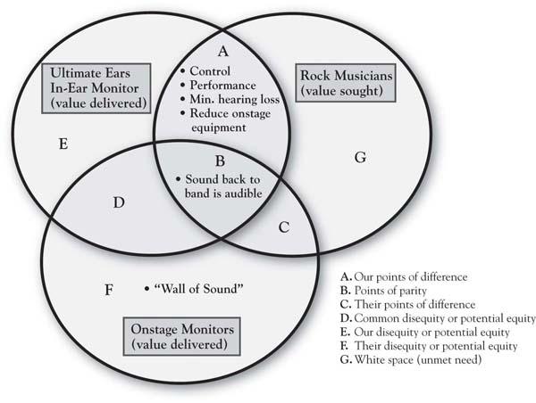

There is competitive advantage in thinking about your organization in a way that integrates the value customers seek, the value the competitor is believed to provide, and your own value-producing capabilities. A company called Ultimate Ears illustrates such thinking. A sound engineer who worked closely with big rock bands like Van Halen, Jerry Harvey was very close to the customer segment (rock musicians) and the need for sound management. The traditional technology for band members to hear their own performance was large, onstage monitors (speakers) tied to each instrument. Figure 1.1 "Value Sought By Customers: Rock Musicians and Onstage Sound" is our first circle—the customer’s circle, in this case representing the value sought by rock and roll musicians in the sound equipment used by the band to hear its own performance. Here is the key benefit that a band desires from that equipment: that it produces sound audible to the band members (seems pretty obvious!). But let us push that a little further. Why is this important to the musicians? It seems simple, but digging underneath, it is easy to see how the notion of being able to “listen to one’s self play” is fundamentally related to overall performance and achievement. If the sound back to the band is audible, that enhances performance quality by allowing the band to be more precisely in sync with each other. Performance quality is fundamental to the success of the show to an audience that is accustomed to hearing the music on precisely mixed studio recordings. Figure 1.2 "Value Delivered By Onstage Monitors" captures the fact that the standard technology—large onstage monitors—provides this basic quality. The circle added on the lower left represents the customer’s perception of the value provided by the onstage monitors. As in any product or service category, there are a number of dimensions of this value. For the moment, though, we will focus on a few of the most important dimensions.
Figure 1.1 Value Sought By Customers: Rock Musicians and Onstage Sound

The overlap between the circles is strategically important. It is the positive “equity” provided by the product in the mind of the customer—that is, the space where value delivered meets value sought. So the onstage monitors provide a way for the band to effectively hear the sounds of their instruments and vocals, and positive value is produced for these customers.
Figure 1.2 Value Delivered By Onstage Monitors

Figure 1.2 "Value Delivered By Onstage Monitors" also points out two other strategically important concepts, relating to the areas where the circles do not overlap. The nonoverlapping area to the left—which we label nonvalue or negative value (the latter also known as disequity). Many consumption experiences have nonvalue or negative value associated with them. It is the calories consumed while relishing a big hamburger, the headache after a celebratory night out, and, occasionally, it is an endemic part of a good or service that we are simply willing to put up with in the absence of a superior alternative. It is the exorbitant fees for the broker with whom you have developed a very close relationship and trust implicitly, the chatty hair stylist whose gossip you put up with because you love the way he or she cuts your hair, or the doctor you love who makes you wait forever in the waiting room. In the case of the rock musician, it is the “wall of sound” that occurs when onstage monitors are used to allow the band members to hear the instruments. This is the deafening sound onstage that escalates as each member player sequentially keeps turning up the volume on their own monitor so they can hear their instrument. That wall of sound not only gets in the way of effective performance, it has also contributed to significant hearing loss over time among rock band members.Peters et al. (2005). For example, Alex Van Halen reports that he has lost 30% to 60% of his hearing as a result of years of sound “gas fires” occurring during onstage Van Halen shows.Sauer (2007, June 1). Where a firm’s products or services create nonvalue, or even negative value, there is significant opportunity for growth.
Similarly, growth can be found in unmet needs. This upper right portion of Figure 1.2 "Value Delivered By Onstage Monitors" is another nonoverlapping area, critical in that it keeps attention focused on the reality that customer needs are never fully met. Musicians seek perfection in performance, possibly an ideal that cannot be achieved. Yet any edge that can be obtained to improve performance is a direct contribution to the musician’s bottom line, relating to success, enjoyment, and career achievement. A second way to think more deeply about unmet needs is to ask some obvious-sounding questions about points of negative value that our product or service is creating. Why is that important enough to consumers for them to mention it? For example, one reason that the “wall of sound” problem is important to rock musicians is because it is associated with hearing loss. Why is hearing loss important? It is so obvious that we do not really think about it, yet we should think about it to understand its enormity as a consideration in decision making. As people lose their hearing, they may lose not only the capability to make a living and take care of one’s family but also the ability to enjoy the people and world around them—that is, quality of later life is a deeper value that is touched by this. So how big is the value of an alternative that solves this problem? (Huge!) Would musicians be willing to pay handsomely for a superior solution? (Yes!)
This dilemma is where Jerry Harvey came in. Encouraged by musicians who sought something to help improve performance and to reduce hearing loss, Harvey developed the equivalent of an in-ear monitor, which each player on stage would have, isolating the sound of their specific instrument. This allowed the musicians to hear clearly, to know how they fit in with the other players, and to better control their own sound. These performance benefits were supplemented not only by substantial noise reduction (easier on the ears) but also by the greater room on stage given the removal of the larger onstage monitors. Figure 1.3 "3-Circle Illustration of Ultimate Ears’ Competitive Advantage" completes the 3-Circle picture, adding the circle on the left, which represents the value provided by Harvey’s company, Ultimate Ears. The addition of the third circle creates seven distinctive areas in the Venn diagram—each labeled by a letter and each strategically meaningful. For the moment, we will focus on a couple of the key areas for illustration. Note that the basic benefit—“sound back to band is audible”—is in the middle area, labeled “Area B” or points of parityThe customer believes each of the two competing technologies delivers on that basic belief.. The customer believes each of the two competing technologies delivers on that basic benefit. What distinguishes the Ultimate Ears product are the benefits in its Area A, that is, its points of differenceThe product delivers substantial, unique value to customers in the form of superior performance.. The product delivers substantial, unique value to customers in the form of superior performance (both due to hearing the performance better and less onstage equipment) and in substantially reducing hearing loss, a quality-of-life issue. It is difficult to identify any items that customers would call positive points of difference for the onstage monitors. In contrast, the disequities that were mentioned earlier fit into Area F, which is more broadly defined as disequities, or potential equities, for the onstage monitor technology.Areas D, E, and F in Figure 1.3 "3-Circle Illustration of Ultimate Ears’ Competitive Advantage" are all labeled “disequity/potential equity” because they represent attributes currently providing no value to customers but, in fact, may provide the potential to provide value. Ultimate Ears has been a major entrepreneurial success. This product concept, based on unique, patented technology and manufacturing capability, has become a standard in the industry. It creates significant customer benefits in both enhancing performance quality and the musicians’ quality of life by limiting hearing loss.
Figure 1.3 3-Circle Illustration of Ultimate Ears’ Competitive Advantage
The analysis based on Figure 1.1 "Value Sought By Customers: Rock Musicians and Onstage Sound" through Figure 1.3 "3-Circle Illustration of Ultimate Ears’ Competitive Advantage" illustrates that Ultimate Ears was successful because it
These are the three core principles of competitive business strategy that drive the analysis guided by the 3-Circle model.